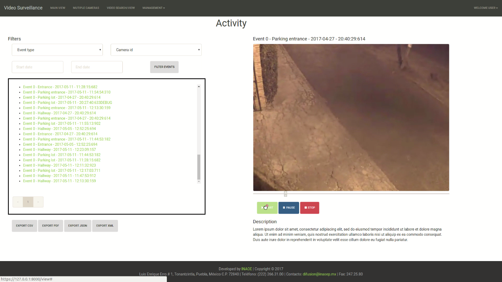

Smart Security App
The use of video surveillance systems has been growing significantly in recent years. This growth is mainly due to the need to ensure the safety of people. For this reason, the number of applications that have been developed to solve this problem have increased significantly. Solutions that go from the simplest, such as monitoring systems, to more complex, like those capable of determine possible risk situations.
With the emergence of new technologies, like cloud computing, now user can be provided with other resources, for instance, Large data storage capacities, processing power, etc. Besides, software support and system updates can be done remotely.
With the goal of addressing this problem we have created a video surveillance project based on the cloud computing schema, this project is called ViVA (Video Vigilancia Automática), for its acronym in Spanish. In this project we have proposed a software architecture (for more details see next section), furthermore, we also have develop a set of computer vision algorithms to obtain a description of what is happening in a monitored area, and then to take appropriate action based on that interpretation, in both, indoor (e.g. offices) and outdoor environments (like parking lots).
In general, our video surveillance system is capable of acquiring a video stream from a set of cameras connected to the network, process that information to detect motion, classify moving objects and track them; report a description of what is happening in a monitored area, store the information on a remote server, and help the users to take the appropriate action.
Interfaz
The User interface was build using the Web2Py Framework, which allows the fast development of Web Applications with Python language as it core. This framework uses the MVC (Model-View-Controller) architectural pattern to build up the web applications.
The Page Structure of the Web Application is the following:
- Login
This page forbids the access of unauthorized users to the system, blocking both view and management privileges.

- Main view
This view is composed by a container with a stream from one of the cameras connected to the system and a carousel with small views of the streams of other active cameras. The user can navigate between the streams and check the last events detected by the system, also, this interface allows the manual recording of video segments that could be of interest for the user.

- Multiple cameras
This view is composed by a grid of nine elements (3x3) showing the cameras registered in the system, allowing the user to have a global vision of what is happening in several cameras at the same time.

- Video Search/view
This page allows the user to search segments of video associated with events detected by the system, both automatic detections and manual recordings. This interface contains a form to search by event type, by date of detection, and/or by the id of the camera in which the event was detected.

- Management
This section have to views: camera management and filters management. The first view allows the user to register new cameras and edit those already registered. The fields for registering a camera include: The Name that will identify the camera in the interface, the IP Address to obtain the stream and the Name of the Zone where the camera is located. Filters management allows to the user change the color of bounding box, enclosing circle, tex tag and filling object.